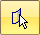
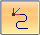
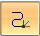

Align command bar
- Select Body Step

-
Selects the bodies you want to align.
- From Coordinate System

-
Specifies the coordinate system from which the body is moved.
- From Coordinate System options
-
Specifies the method for placing the "From" coordinate system.
- Use Principal Axes
-
Uses a principal axis, which is placed either to the center of mass or the center of a bounding box of the selected body, as the coordinate system.
- Use best fit bounding box
-
Uses a bounding box that is aligned to the base coordinate system. You can place and orient the coordinate system on a face, edge, or vertex of the bounding box and align the body.
- Use Custom bounding box
-
Uses a custom defined bounding box aligned to the selected plane or planar face that is selected.
- Use geometry references
-
Uses defined axis points and origin to place the coordinate system.
- Create-From options
-
Sets the method of defining the profile plane or specifies that you want to construct the feature using an existing sketch. These options are only available when you select the Use Custom bounding box creation option.
-
Coincident Plane—Specifies that you want to define a plane that is coincident to an existing reference plane or a planar face on the part. When you set this option, a default X-axis and direction is applied to the new reference plane. You can use keyboard accelerators to define a different X-axis and direction for the new reference plane.
-
Parallel Plane—Specifies that you want to define a reference plane that is parallel to an existing reference plane or a planar face on the part. When you set this option, you can specify the parallel offset distance. When you set this option, a default X-axis and direction is applied to the new reference plane. You can use keyboard accelerators to define a different X-axis and direction for the new reference plane.
-
Angled Plane—Specifies that you want to define a reference plane that is at an angle to an existing reference plane or planar face on the part. When you set this option, you can specify the angle value you want.
-
Perpendicular Plane—Specifies that you want to define a reference plane that is perpendicular to an existing reference plane or planar face on the part.
-
Coincident Plane By Axis—Specifies that you want to define a reference plane that is coincident to an existing reference plane or a planar face on the part. When you set this option, you define the X-axis and direction for the new reference plane using a linear edge, a planar face, or another reference plane.
-
Plane Normal to Curve—Specifies that you want to define a plane that is perpendicular to a curve you select. This is the default option when constructing a helix using the Perpendicular option.
-
Plane By 3 Points—Specifies that you want to define a plane by three keypoints you select.
-
Tangent Plane—Specifies that you want to define a plane that is tangent to a curved face on the part. You can select a cylinder, cone, sphere, torus, or b-spline surface. When you set this option, you can also specify the angular rotation value. When you set this option, a default X-axis and direction is applied to the new reference plane. You can use keyboard accelerators to define a different X-axis and direction for the new reference plane.
-
- To Coordinate System

-
Specifies the coordinate system to which the body is moved. By default, this is the base coordinate system.
- Accept

-
Accepts the selection.
- Deselect

-
Clears the selection.
How do I
Create a sketch from a section curveLearn more
Reverse Engineering workflowReverse engineering example
Look up more details
Delete Mesh commandFill Holes command
Smooth Mesh command
Align command
Remesh command
Remesh Options dialog box
Automatic regions command
Manual regions command
Extract surfaces command
Fit surfaces command
Deviation Analysis command
Deviation Analysis command bar
Deviation Analysis Settings dialog box
Section Sketches command
Section Sketches command bar
Section Sketches Options dialog box
Related Topics
Align a mesh body to a coordinate systemAnalyze the deviation between two objects